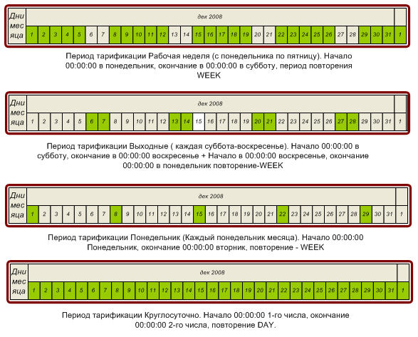

|
Назначение и особенности |
Top Previous Next |
|
Под периодом тарификации в Expert Billing System понимается повторяющийся с указаной периодичностью диапазон времени. Периоды тарификации используются для ограничения возможности доступа (в зависимости от времени суток, дня недели, месяца и т.д.) пользователя в Сеть для тарифного плана в целом, а также для тарификации потребляемых абонентами услуг.
В Expert Billing System каждый период тарификации задается одной либо несколькими составляющими. Так, для периода тарификации «Выходные и праздники» составляющими могут быть «Суббота», «Воскресенье», «Новый год», «9 мая» и др. Время действия составляющих (с учетом периода повторения каждой из них) определяет продолжительность периода тарификации. Если составляющие для периода тарификации не указаны, расчётный период не будет иметь смысла.
Составляющие периода тарификации задаются точной датой и временем начала и окончания действия (например, с «00:00:00 09.05.09» по «09:00:00 09.05.09»), а также периодом повторения. Периоды повторения могут быть следующими:
DAY – повторение через каждые 86400 секунд (для периода, начавшегося в 00:00:00 01.02.09 первое повторение произойдет в 00:00:00 02.02.09); WEEK – повторение через каждые 7 дней (для периода, начавшегося в 00:00:00 01.02.09 первое повторение произойдет в 00:00:00 08.02.09); MONTH – повторение через каждый месяц с числа по число, причем продолжительность месяцев и високосные годы учитываются корректно (для периода, начавшегося в 00:00:00 01.02.09 первое повторение произойдет в 00:00:00 01.03.09). Если период тарификации у вас начинается 31 января с повторением MONTH, то в феврале расчётный период начнётся 28 числа (или 29, если год – високосный); YEAR – повторение через каждый год (для периода, начавшегося в 00:00:00 01.02.08 первое повторение произойдет в 00:00:00 01.02.09);

Обратите внимание: дата начала создаваемого расчётного периода должна быть меньше, чем текущая дата. Рекомендуем выбрать начало какого-либо прошедшего года и прописывать все периоды тарификации относительно этой даты. This help file was created with an unregistered evaluation copy of Help & Manual. © EC Software. All rights reserved. This message will not appear if you compile this help file with the registered version of Help & Manual. |